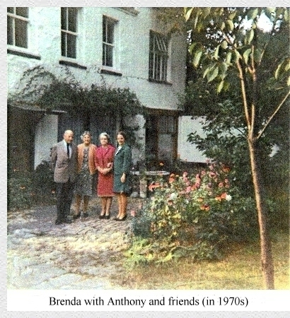

|
Brenda Innes' Article
|
|
Brenda Innes was a resident of the Coach House from 1954 to 1984. Her artical appeared in the May 1990 edition of the monthly magazine of the Bromley Borough Local History Society. Members may be interested to know more about Major Babbage whose influence on the development of Bromley in the late 1870s and '80s was covered in "The Town of Bromley a Century Ago". My particular interest in New Bromley stems from having lived there for thirty years in a cottage built as a coach house and workshop in 1873 by Major-General Henry Prevost Babbage. Babbage was typical of the type of person settling in Bromley at this time, with adequate if not limitless means and a desire for a "rural retreat" within easy reach of London. In other ways he was most unusual; Youngest son of Charles Babbage, the inventor of the computer, he inherited his father's active intelligence and in his years in India had enthusiastically built bridges, courthouses, houses and even a bazaar. Babbage first mentions New Bromley in his memoirs as the place where his younger daughters were at school. Sophie and Mary Babbage are listed as "scholars" with Miss Strutt at Denmark Road in the 1871 census, which also has a Mary Babbage shown as a visitor; this could have been their mother, who was always "Min" to her husband. On furlough from India later that year he rented Park View House in Park Road which was "too small for our family" (at that time apparently himself, his wife, three daughters and a maid), but they appreciated its over half-acre garden which was "a joy to us all". I believe Park View House was demolished in the 1960s to make way for Park Place.

Later, with his furlough extended by sick leave, Babbage rented Komani Villa which he described as being at the corner of Park Road and Freelands Road. This being furnished cost him 40 pounds per quarter. Komani Villa is a mystery as no house is shown at that spot on the 1862 O.S. map, and those on the next edition are largely there today, none of which look as if they were built in the early 1870s. In 1872 Babbage's father died and his property, which included a house called Dainton, was divided among his three sons. Major Babbage appears to have invested his share in five acres of land beyond the end of Park Avenue which he bought from a Mr. Morum who owned several cottages in the area. It was measured up by Mr. Gegeen, the surveyor to the local board, on 26 April 1872. This land appears on the 1862 map as a gravel pit and brickfield and Babbage describes it as "an ugly place where rubbish, etc., was thrown"; rather like a present day urban fringe area and probably similarly the result of development. In the 1840s a poem had been written to celebrate the removal of stiles by Mr. Potts of Freelands, which made the path from Bromley toward his house and on to Chislehurst easier for strollers, especially the ladies, presumably a pleasant walk across the fields earlier in the 19th century. Major Babbage's first building on the site was our old 'house', the workshop, where he installed those of his father's tools which he intended to keep. He records moving them there on 4 September 1872, so as he had laid out the foundations on 19 July, this rather plain brick building took only a very short time to build. I have always wondered if the yellow stock bricks were made on site, but although there were certainly bricks being made in Bromley at this time - there were complaints about the smoke from the brickworks at Bromley Common - I can find no proof of this. 1873 found Babbage seriously ill, still at Komani Lodge where his wife Min nursed him devotedly until May when he took his first airing of the year in a Bath chair. No doubt he went to look at the new house, Dainton, which was far enough advanced by June for it not to be affected by the bankruptcy then of its builder, Mr. Emmett. In August the Babbages went to Brighton for a holiday and in September they moved to Pengellen House in Anerley. Mrs. Babbage must have had a busy year nursing, closing down her father-in-law's house, then furnishing Dainton and moving twice. They moved into Dainton later in September. I cannot find how many staff they employed though Babbage does mention taking Sarah and the maid to Brighton with them. Major Babbage then had to return to India for a year to complete his 25 years' service before retiring with the rank of Major-General, on 14 December 1874. Once settled in with his family he launched himself into local affairs, initially to improve conditions in New Bromley but, having gained himself a seat on the Local Board, he involved himself in every topic that arose, and his name was scarcely ever absent from the columns of the Bromley Record, until he left for Cheltenham in 1885. |